Chapter 4 Vrije opdracht
In dit gedeelte van het portfolio laat ik een techniek zien waar ik interesse voor heb. Dit gedeelte bestaat uit drie delen. In het eerste gedeelte vertel ik over de techniek en waarom het van toepassing voor mij is om dit te leren. Daarna staat mijn planning om deze techniek te leren en als laatste is een workflow met voorbeelden hoe ik de techniek geleerd heb en kan gebruiken.
4.1 Onderbouwing gebasseerd op toekomstplan
Voor dit onderdeel heb ik gekozen om single cell RNA sequencing data te analyseren. Dit vooral omdat dit te maken gaat hebben met mijn stage. Hierbij wordt er namelijk gekeken naar de interactie tussen bacteriën en humane cellen. Deze techniek kan goed gebruikt worden om te kijken naar de individuele cellen, aangezien niet alle bacteriën in alle cellen binnen dringen. Daarnaast ga ik als techniek ook flow sorting doen van humane cellen, dus past deze analyse er goed in. Ook in de toekomst zou het me interessant lijken om deze techniek verder te gebruiken om te kijken welke cellen er bijvoorbeeld in kankerpatiënten zitten en of cellen bepaalde pathhways gebruiken in de aanwezigheid van bacteriën om bijvoorbeeld chemoresistentie te onderzoeken. Vanuit deze redenen lijkt het me handig om meer inzicht in deze skill te hebben.
Als doel van dit onderdeel wil ik voor mezelf een workflow opstellen zodat ik later dit bestand terug kan halen en makkelijk de stappen voor de analyses kan uitvoeren en begrijpen.
4.2 Planning
Tijdens deze opdracht wordt er 32 uur besteed om de skill te leren. Op het einde van de opdracht zal ik reflecteren op deze planning en kijken wat er in de toekomst beter kan.
| Aantal uur | Content |
|---|---|
| Dag 1 | |
| 2h | Inlezen over het onderwerp, wat is de standaard workflow |
| 1h | Inlezen over het onderwerp, wat zijn de methodes die kunnen worden gebruikt en in wat voor onderzoek wordt deze techniek gebruikt. |
| 2h | Maken van de planning, zoek op welke stappen er nodig zijn voor de analyse en plan dit in |
| 1h | Schrijf waarom deze techniek relevant is voor de toekomst |
| 2h | Volgen van tutorial (source), om een indruk te krijgen van de stappen die nodig zijn. |
| Dag 2 | |
| 2h | Eindig de tutorial, van dag 1 |
| 4h | Volg nieuwe tutorial (source). Voer delen uit van de algemene analyse uit met een nieuwe dataset. |
| 2h | Voeg delen van beide tutorial samen om een workflow op te stellen |
| Dag 3 | |
| 2h | Cellen annoteren, gebruik verschillende methodes en kijk welke methode het beste werkt. |
| 6h | Voer exploratory analyses uit. Hieronder vallen de functional enrichment analysis, pseudo time analysis en cell-cell communicatie analyses. De gekozen analyses hangen af van de dataset. |
| Dag 4 | |
| 2h | Maak workflow document in Rmarkdown. |
| 4h | Voer de analyses uit met een nieuwe dataset. |
| 2h | Zorg ervoor dat de figuren duidelijk zijn. |
| 2h | Schrijf over welke stappen er in de toekomst nog nodig zijn om expert te worden in dit onderwerp. |
4.3 Uitwerking vrije opdracht
Tijdens het uitwerken van de vrije opdracht heb ik eerst een tutorial gevolgd om de code beter te begrijpen link naar tutorial. Nadat deze tutorial is gevolgd heb ik online tutorials gezien en een combinatie van de code gebruikt om een script te maken die ik later ook kan gebruiken voor analyses.
Voor single cell RNA sequencing data analyses zijn er drie stappen. De eerste stap is om de ruwe data in te laden, te filteren met het programma FASTQC en een countmatrix te maken. Deze stappen zijn in dit gedeetle niet gedaan, aangezien er als dataset een count matrix is ingeladen vanuit de site 10x Genomics. Eerst zijn de analyste stappen uitgevoerd op een dataset met human peripheral blood mononuclear cells (PBMCs) van een gezonde 27 jarige man. Vanuit deze data heb ik de bijbehorende countmatrix gedownload en hier op analyses uitgevoerd. Om het volledige script te zien, ga naar de pathway: scripts/scRNAseq.R. In dit portfolio staan de algemene stappen en de grafieken die erbij worden gemaakt.
4.3.1 General analysis
Nadat de count matrix is gemaakt worden algemene analyses uitgevoerd. De data wordt gefiltered op slechte kwaliteit cellen (als de cellen hele lage of hele hoge transcriptie hebben) en op mitochondriale transcriptie (MT). Dit wordt gedaan omdat slechte kwaliteit cellen vaak schade hebben waardoor er veel MT vrij komt.
#Load libraries
library(tidyverse)
library(Seurat)
library(patchwork)
library(hdf5r)
library(dplyr)
library(DoubletFinder)
library(ggplot2)
library(celldex)
library(SingleR)
library(viridis)
library(pheatmap)#Load in count matrix
pbmc.n <- Read10X_h5(filename = "raw_data/Data020/sc5p_v2_hs_PBMC_10k_raw_feature_bc_matrix.h5")## Genome matrix has multiple modalities, returning a list of matrices for this genome## List of 2
## $ Gene Expression :Formal class 'dgCMatrix' [package "Matrix"] with 6 slots
## .. ..@ i : int [1:21790216] 36386 31111 8220 31199 23735 32047 13246 26119 724 2093 ...
## .. ..@ p : int [1:737281] 0 1 1 2 4 4 4 4 4 4 ...
## .. ..@ Dim : int [1:2] 36601 737280
## .. ..@ Dimnames:List of 2
## .. .. ..$ : chr [1:36601] "MIR1302-2HG" "FAM138A" "OR4F5" "AL627309.1" ...
## .. .. ..$ : chr [1:737280] "AAACCTGAGAAACCAT-1" "AAACCTGAGAAACCGC-1" "AAACCTGAGAAACCTA-1" "AAACCTGAGAAACGAG-1" ...
## .. ..@ x : num [1:21790216] 1 1 1 1 1 2 1 1 1 1 ...
## .. ..@ factors : list()
## $ Antibody Capture:Formal class 'dgCMatrix' [package "Matrix"] with 6 slots
## .. ..@ i : int [1:3020346] 3 13 4 10 13 0 2 3 4 8 ...
## .. ..@ p : int [1:737281] 0 0 2 3 3 5 7 7 10 12 ...
## .. ..@ Dim : int [1:2] 19 737280
## .. ..@ Dimnames:List of 2
## .. .. ..$ : chr [1:19] "CD3_TotalC" "CD19_TotalC" "CD45RA_TotalC" "CD4_TotalC" ...
## .. .. ..$ : chr [1:737280] "AAACCTGAGAAACCAT-1" "AAACCTGAGAAACCGC-1" "AAACCTGAGAAACCTA-1" "AAACCTGAGAAACGAG-1" ...
## .. ..@ x : num [1:3020346] 1 1 1 1 1 1 1 1 1 1 ...
## .. ..@ factors : list()Zoals te zien zijn er twee verschillende lists aanwezig in de data. Voor deze analyse werken we verder met de matrix genaamd Gene Expression.
De data wordt ingeladen als een Seurat object.
#Load data and filter out low quality cells and genes
pbmc.seurat.obj <- CreateSeuratObject(pbmc_counts, project="PBMC", min.cells = 3, min.features = 200)
pbmc.seurat.obj
#Check object
str(pbmc.seurat.obj)Na het inladen van de data kan de data worden gefiltert. Eerst wordt er gekeken naar de verdeling van de data. Dit wordt gedaan met een violin plot.
#Check mitochondrial transcript (MT) percentage. dying/low quality cells have hgher MT concentrations
pbmc.seurat.obj[["percent.mt"]] <- PercentageFeatureSet(pbmc.seurat.obj, pattern = "^MT[-\\.]")
#Look at distribution data
VlnPlot(pbmc.seurat.obj, features = c("nFeature_RNA", "nCount_RNA", "percent.mt"), ncol = 3)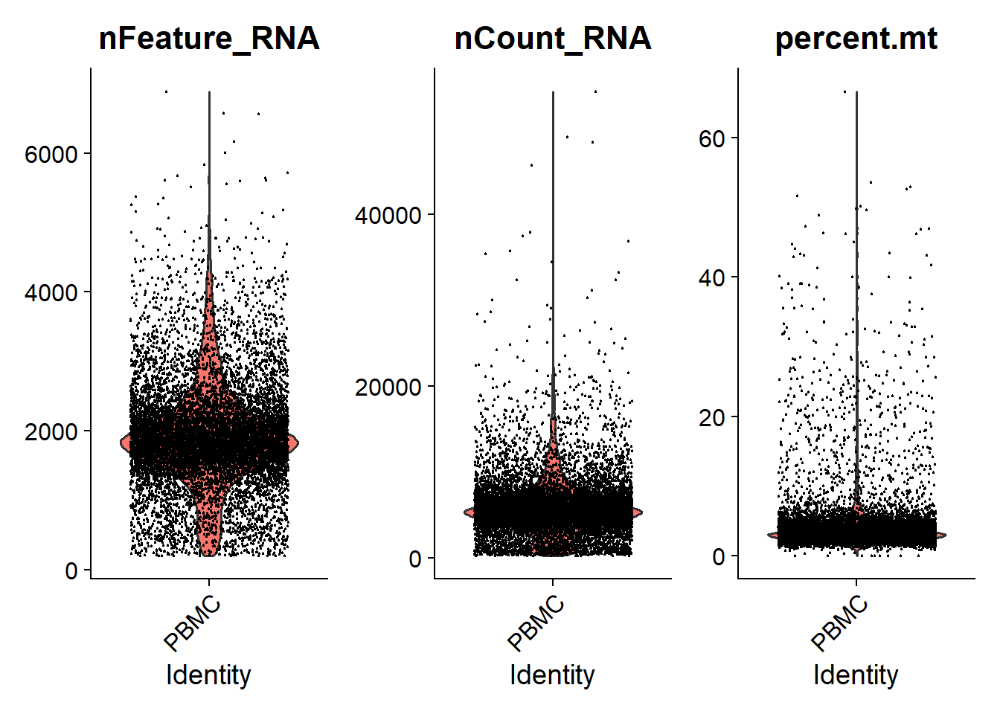
Daarnaast wordt er gekeken naar verschillende correlaties. Er wordt verwacht dat er een correlatie is tussen het aantal genen en het aantal transcripties, maar dat er geen correlatie is tussen het aantal MT (percentage) en het aantal transcripties.
library(patchwork)
plot1 <- FeatureScatter(pbmc.seurat.obj, feature1 = "nCount_RNA", feature2 = "percent.mt")
plot2 <- FeatureScatter(pbmc.seurat.obj, feature1 = "nCount_RNA", feature2 = "nFeature_RNA")
plot1 + plot2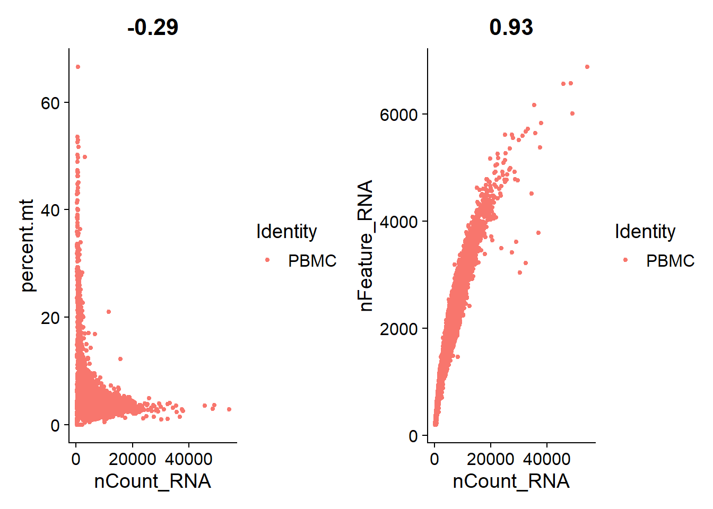
Zoals in de bovenstaande grafieken te zien is kloppen de verwachtingen, waardoor er verder kan worden gegagaan met het filteren. De lage kwaliteit cellen gebasseerd op het aantal genen en MT percentages worden eruit gefiltert.
#Threshhold is based on the violin plot
pbmc.seurat.filtered <- subset(pbmc.seurat.obj, subset = nFeature_RNA > 200 & nFeature_RNA < 2500 &
percent.mt < 5)Na het filteren wordt de data genormaliseerd, aangezien het aantal RNA verschilt per cel. De features worden genormaliseerd tegen de totale expressie.
#3. normalize data
#Divide gene measurement in each cell by the total expression multiplied by a scaling factor, log trasnsform
pbmc.seurat.filtered <- NormalizeData(pbmc.seurat.obj)## Normalizing layer: countsNa het normaliseren worden de high variable genes gekozen. Dit wordt gedaan omdat cellen met een lage expressie of met vergelijkbare expressie niet veel informatie bieden voor het onderscheiden van de verschillende groepen.
#Most of the time, the nfeatures value is between 2000 and 5000
pbmc.seurat.filtered <- FindVariableFeatures(pbmc.seurat.filtered, selection.method = "vst", nfeatures = 2000)## Finding variable features for layer counts#Plot variable features
plot1 <- VariableFeaturePlot(pbmc.seurat.filtered)
LabelPoints(plot = plot1, points = top10_HVG, repel = TRUE)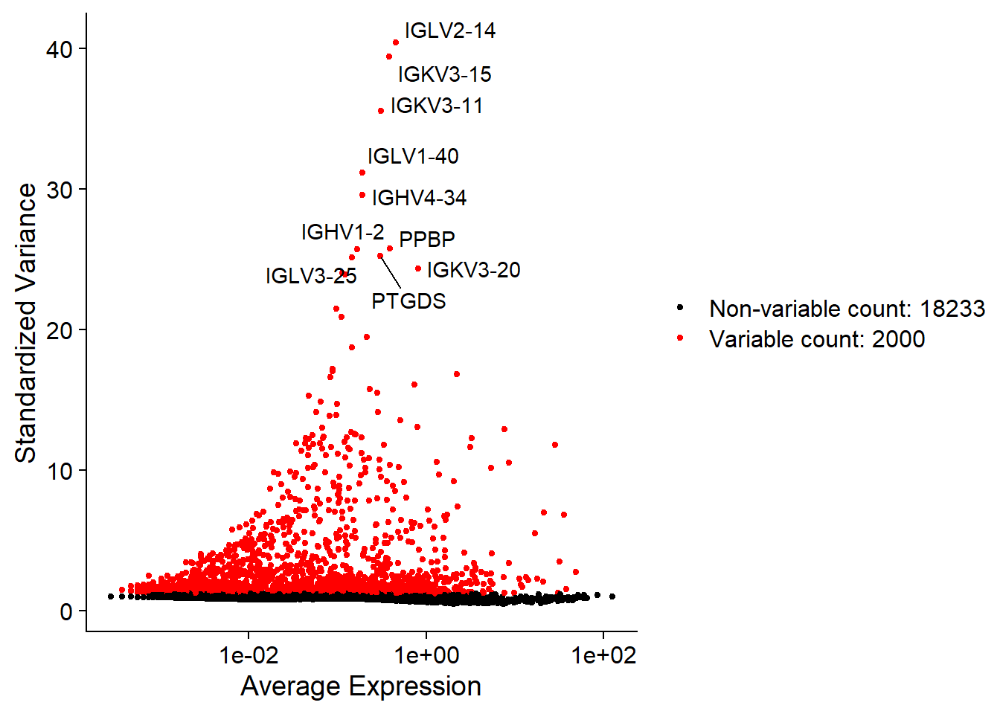
Nadat de high variable genes zijn geplot moet de data is gescaled worden, aangezien sommige genen in het algemeen meer tot expressie komen dan andere genen.
#Acount for sources of variance
#Biologival sources: Difference in cell cycle
#Technical noise: Bacth effect
all.genes <- rownames(pbmc.seurat.filtered)
pbmc.seurat.filtered <- ScaleData(pbmc.seurat.filtered, features = all.genes)Voordat verdere analyse kan worden uitgevoerd moet er een dimensie reductie analyse uitgevoerd worden. Hierdoor is de data meer compact waardoor er sneller mee gewerkt kan worden.
pbmc.seurat.filtered <- RunPCA(pbmc.seurat.filtered, features = VariableFeatures(object = pbmc.seurat.filtered))## PC_ 1
## Positive: LYZ, CST3, FCN1, IFI30, S100A9
## Negative: IFITM1, LTB, IL32, TCF7, IL7R
## PC_ 2
## Positive: IL32, IFITM1, CD7, CD247, IL7R
## Negative: MS4A1, CD79A, BANK1, LINC00926, IGHM
## PC_ 3
## Positive: NKG7, CST7, GZMB, GNLY, GZMA
## Negative: LEF1, CCR7, TCF7, MAL, IL7R
## PC_ 4
## Positive: CAVIN2, PRKAR2B, PPBP, GNG11, TUBB1
## Negative: TMSB10, CD37, NKG7, PRF1, GZMA
## PC_ 5
## Positive: LILRA4, SERPINF1, CLEC4C, LRRC26, IL3RA
## Negative: LINC00926, MS4A1, FCER2, BANK1, FCRL3Om te kijken hoeveel principle components gebruikt moeten worden in de downstream analyse kan er een elbowplot gemaakt worden, waarbij de “ellenboog” van de plot het aantal PCs is wat gebruikt kan worden.
#Determine only significant principle components which capture the signal in Down stream analysis
ElbowPlot(pbmc.seurat.filtered, ndims = ncol(Embeddings(pbmc.seurat.filtered, "pca")))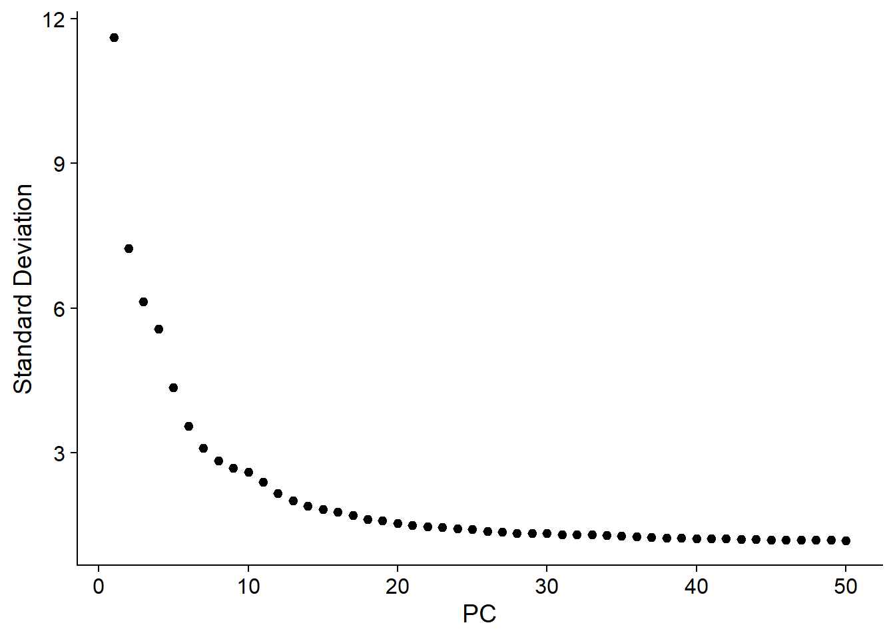
Uit de elbowplot heb ik ervoor gekozen om 15 PCs te gebruiken voor downstream analysis. De volgende stap is om de cellen te clusteren.
#Cells with similair feature expression patterns are clustered together
pbmc.seurat.filtered <- FindNeighbors(pbmc.seurat.filtered, dims = 1:15)Bij het clusteren kan er gekeken worden naar de resolutie van de clusters. Door verschillende resoluties in een grafiek te zien kan er gezien worden bij welke resolutie de clusters het beste eruit zien.
#See which resolution works best to distinct the cells into different clusters
pbmc.seurat.filtered <- FindClusters(pbmc.seurat.filtered, resolution = c(0.1, 0.3, 0.5, 0.7, 1))#Plot to see which resolution works best
DimPlot(pbmc.seurat.filtered, group.by = "RNA_snn_res.1", label = TRUE)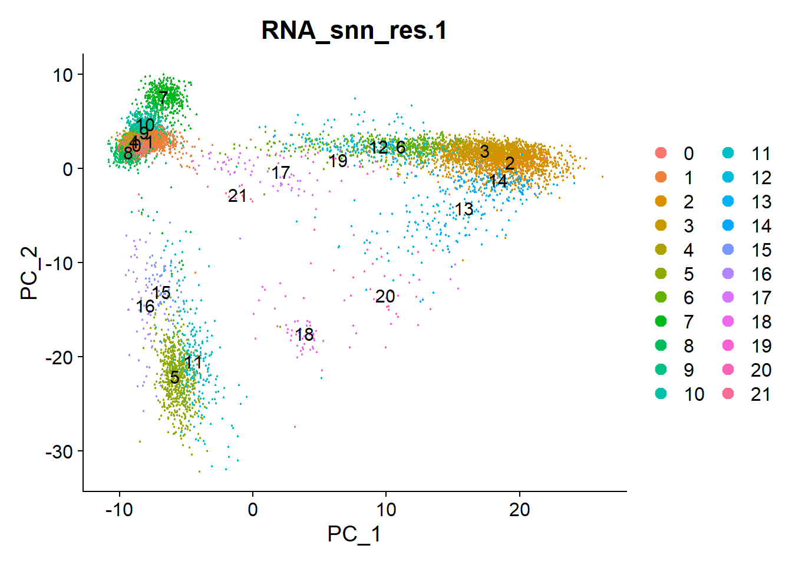
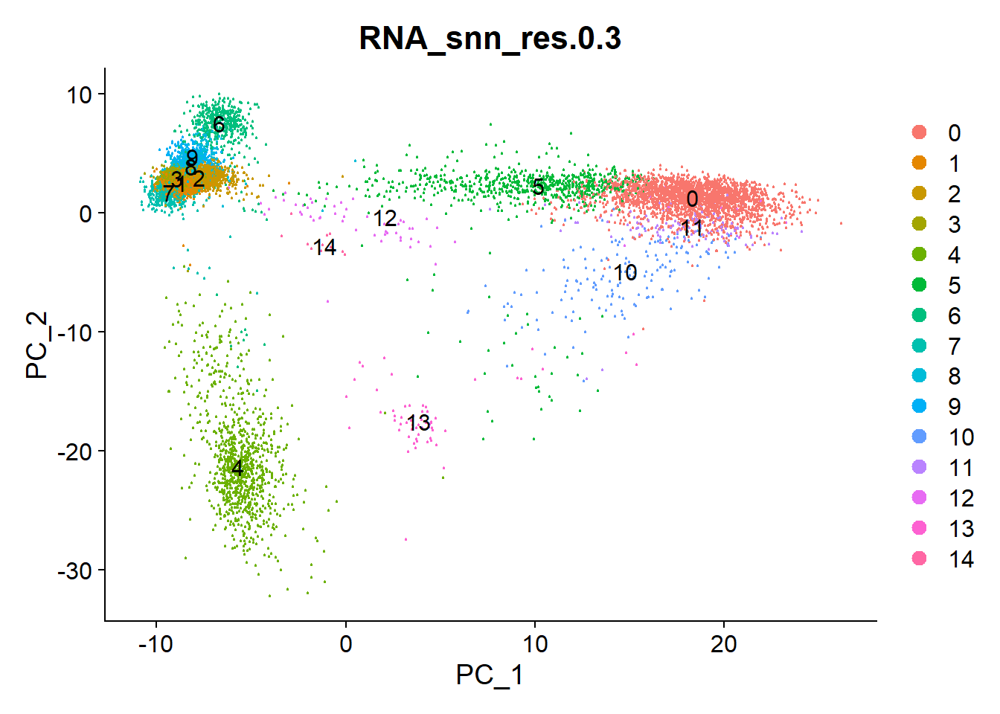
#Perform non-linear dimensionality reduction for display
pbmc.seurat.filtered <- RunUMAP(pbmc.seurat.filtered, dims = 1:15)## Warning: The default method for RunUMAP has changed from calling Python UMAP via reticulate to the R-native UWOT using the cosine metric
## To use Python UMAP via reticulate, set umap.method to 'umap-learn' and metric to 'correlation'
## This message will be shown once per session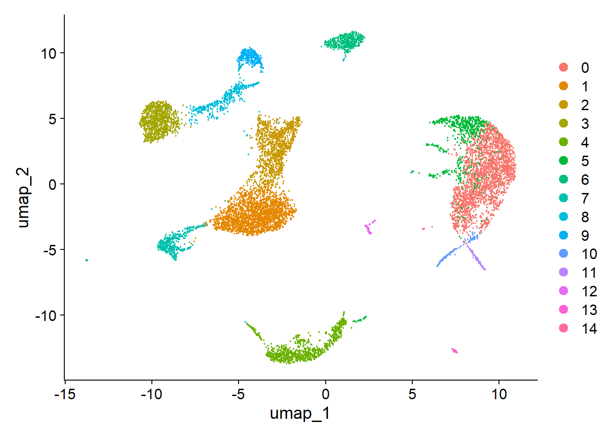
Nadat de cellen zijn geclusterd worden ze geannoteerd. In dit geval worden de clusters vergeleken met een referentie dataset.
#One reference based approach
#Pick a reference that you expect to be in the dataset
ref <- celldex::HumanPrimaryCellAtlasData()
#Check celltypes that are available in the reference
pbmc <- GetAssayData(pbmc.seurat.filtered, layer = 'counts')
prediction <- SingleR(test = pbmc,
ref = ref,
labels = ref$label.main)
pbmc.seurat.filtered$singleR.labels <- prediction$labels[match(rownames(pbmc.seurat.filtered@meta.data), rownames(prediction))]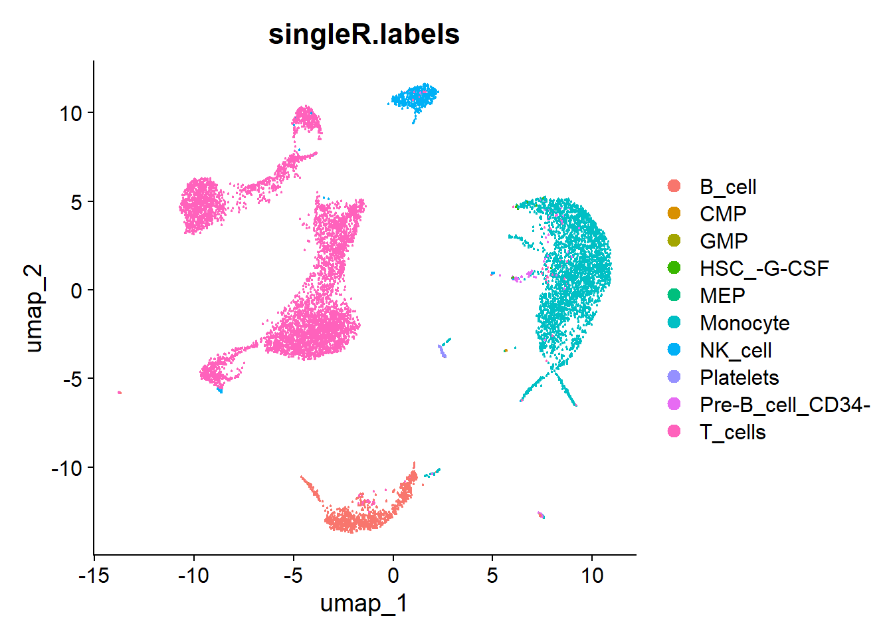
Om de clustering te vallideren kunnen de scores berekent worden die aangeven hoe goed het celltype matcht met het celltype in de database. Hiervan kan een heathmap worden gemaakt. In de heatmap is te zien dat de hoge scoren (geel) matchen meet de labels.
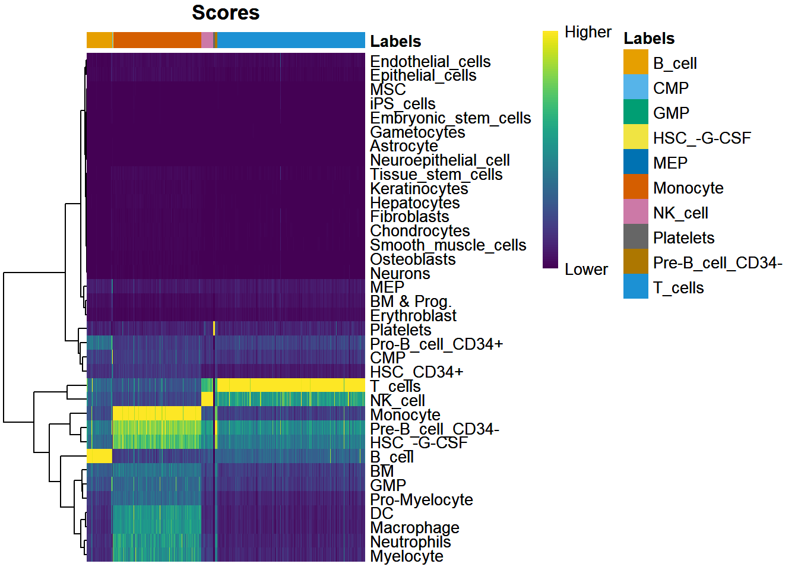
De volgende stappen in de analyses zijn omschreven met tekst in figuren omdat ze veel lange stappen bevatten. Om deze grafieken ook uit te voeren kan naar het Rscript verwezen worden.
4.3.2 Removing doublets
De doublets in de dataset werden verwijderd met de R package DoubletFinder. Deze stap wordt gedaan na de non-linear dimensionality reduction en voor de annotatie. 3 parameters zijn belangrijk in deze package:
pK: Neighborhood size, waarbij er wordt gekeken naar hoeveel cellen er worden meegenomen in PC ruimtes.
PN: Proportie van artifical doublets. Dit zijn fake doublets die gecreëerd zijn door het gemiddelde te nemen van random cellen.
Exp: Aantal doublets dat wordt verwacht. Dit is gebasseerd op een dataset vanuit de 10X site
De PN variable heeft niet veel invloed op de analyse, maar de pK waarde wel. Daarom is het belangrijk om de optimale pK waarde te berekenen. Nadat deze is berekend kunnen het aantal doublets berekend worden.
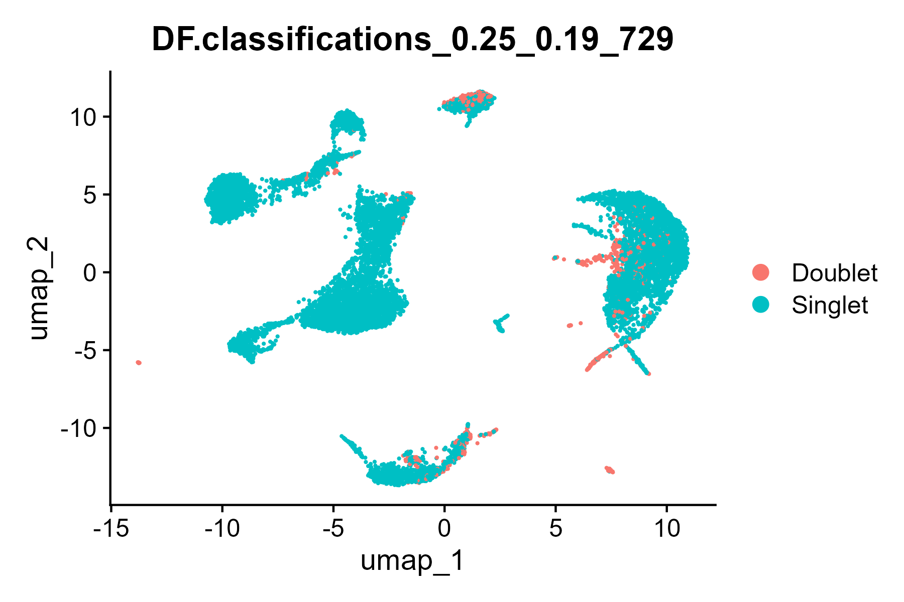
Figure 4.1: doublets in cluster
Zoals te zien is in figuur 4.1 hebben sommige clusters doublets. Deze worden eruit gefilterd voordat de data verder verwerkt kan worden.
UMAP plot na het verwijderen van de doublets:
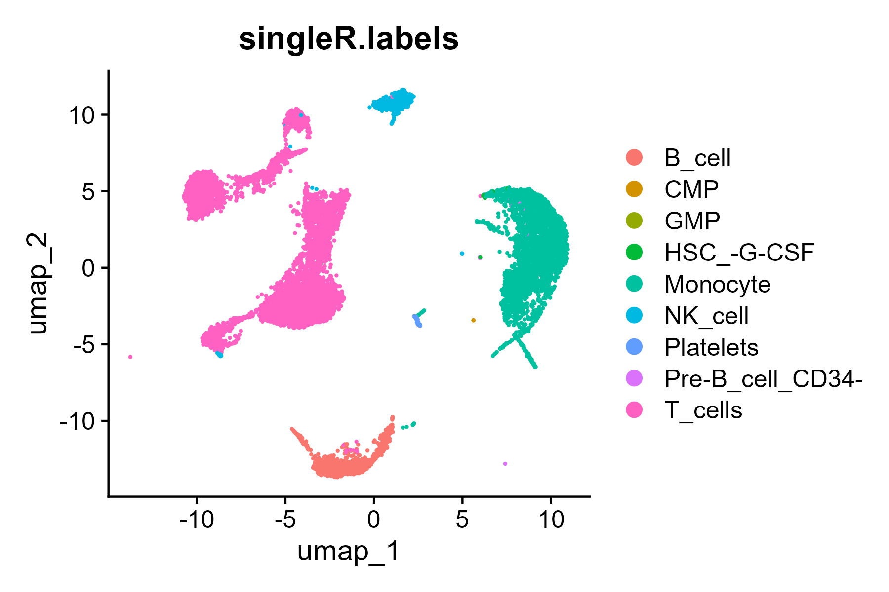
(#fig:after_db_rm)UMAP after removing doublets
UMAP predictions na het verwijderen van de doublets:
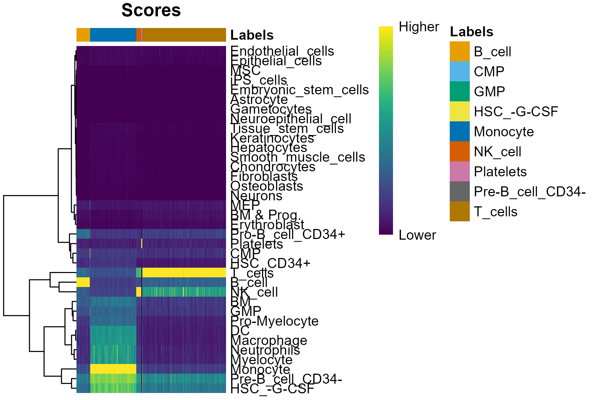
(#fig:after_db_rm_prediction)Cluster prediction after removing doublets
4.3.3 Exploratory analysis
Nadat de general analysis is uitgevoerd kan er gekeken worden naar de biologische processen van de dataset met verschillende exporatory analysis. In dit geval zijn er twee exploratory analysis uitgevoerd.
De eerste analyse is een Marker Gene Detection. Hierbij kan worden gekeken welke genen er specifiek hoog of laag zijn in een cluster en kan er een dotplot meegemaakt worden. Voor deze analyse zijn er drie markers genes gekozen die bekend staan voor specifieke cellen:
CD3D: T cellen
MS4A1: B cellen
NKG7: NK cellen
LYZ: monocytes
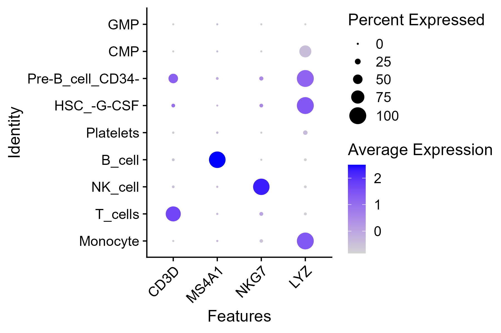
(#fig:marker_gene)Marker gene detection analyse
Uit de marker gene detection kan worden gezien dat de meeste gene markesr overeen komen met het celtypen. Alleen bij de LYZ gene marker zijn er verschillende celtypen te zien. LYZ codeert voor lysozyme, wat ook actief kan zijn in de aangewezen cellen.
Na het analyseren van de Marker genes kan er worden gekeken naar differentiële expressie analyse. DEG analysis wordt gebruikt om genen die een significant verschil tonen in expressie te identificeren tussen de verschillende celgroepen. Hierbij kan er gekeken worden naar de up of down regulation van genen.
In deze analyse wordt er gekeken naar de expressie van genen tussen T cellen en NK cellen. Er wordt verwacht dat de cellen erg verschillen in expressie.
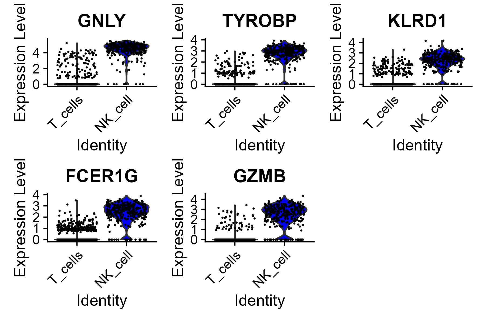
(#fig:DE_analysis)Violin plot DE analyse
Uit de grafiek kan worden gezien dat er een verschil is tussen de cellen met betrekking tot gen expressie. In de violin plot is er vooral te zien dat er veel expressie is bij NK cellen en minder bij T cellen. Dit klopt aangezien de vijf genen gerelateerd zijn met NK cellen.
4.3.4 Voor de toekomst
Na het vergelijken van de clusters met elkaar lijkt het me ook interessant om meer verschillende analyses uit te voeren. Aangezien ik toch langer bezig was met de onderdelen in mijn planning dan verwacht heb ik niet alles kunnen uitvoeren wat ik zou willen. Dit ga ik in de toekomst zeker nog doen. Naast de exploratory analysis die nu zijn uitgevoerd wil ik pathway enrichment analysis gaan doen om te kijken naar de biologische processen die betrekking hebben met de clusters en de transcripties. Dit kan gedaan worden door een GO-analyse of door een KEGG-analyse. Daarnaast wil ik verschillende annotatie methodes gebruiken om te kijken welke het beste werkt en een pseudotime analyse uit te voeren om de verschillende differentiaties van de cellen te zien. Daarnaast lijkt het me interessant om een dataset te analyseren met twee condities, zoals treated en untreated om deze met elkaar te vergelijken. Voor in de toekomst heb ik al wat kennis, aangezien ik over de analysis heb gelezen en de general analysis begrijp.